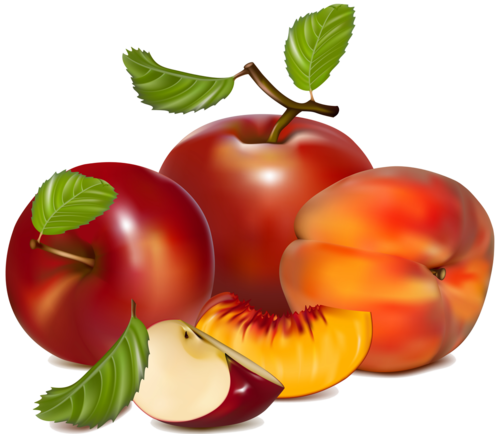

Non è un segreto che mangiare verdure per la perdita di peso è un'opzione ideale. Il fatto è che contengono molti nutrienti. Perdere peso sulle verdure è un magazzino di oligoelementi utili e sostanze vitaminiche.
Da questi, puoi ottenere vitamine come A, E, C, acido folico e potassio. Inoltre, le verdure sono ricche di fibre, che ha un effetto molto positivo sul corpo nel suo complesso e sul processo di perdita di peso in particolare.
Le verdure più utili per la perdita di peso
Indubbiamente, le verdure aiutano a perdere peso e allo stesso tempo non sperimentano i morsi della fame. I più utili e più efficaci per perdere peso sono quelli che contengono molti:
tessuto cellulare;
fibra alimentare;
acque;
vitamine, oligoelementi, aminoacidi.
La fibra è particolarmente importante per la perdita di peso, perché è:
più volte accelera il metabolismo;
riduce i livelli di zucchero nel sangue, che impedisce la deposizione di grasso nel corpo;
molto bene rimuove le tossine e le tossine;
pulisce lo stomaco e l'intestino dal muco;
nutre perfettamente la microflora intestinale utile;
ripristina e stabilisce la digestione, i processi metabolici;
molto bene soddisfa la fame a causa del gonfiore delle fibre alimentari, che creano rapidamente e permanentemente l'effetto di sazietà.
I vegani puri non mangiano carne, rifiutano pesce e latte, escludono le uova dalla dieta. Consentire l'uso di miele in piccole quantità. Un sistema alimentare così rigido è considerato nella medicina ufficiale molto dannoso per la salute. Il rifiuto categorico del consumo di proteine animali porta allo sviluppo di beri-beri e una diminuzione dei livelli di emoglobina. La stretta osservanza di tutte le regole porta a gravi conseguenze. I vegani non indossano abiti e non usano prodotti chimici domestici realizzati con l'aggiunta di materiali animali.
I vegetariani sono divisi in diversi sottogruppi.
Per saperne di più
Ecco un elenco delle verdure più utili ricche di fibre, che puoi tranquillamente includere nella dieta per perdere peso:
cavolo bianco, broccoli, Bruxelles, cavolo rapa, colorato;
porro;
cipolle;
carota;
radice di prezzemolo;
pomodori secchi;
pomodori freschi;
rabarbaro;
ravanello nero;
ravanello;
radice di sedano;
topinambur;
zucca;
rafano (radice);
pepe bulgaro;
asparagi;
piselli primaticci.
Il nostro corpo è progettato in modo tale che semplicemente non può ottenere una singola caloria dalla fibra! La fibra non è completamente digerita e non digerita. Grazie a questo, i chili in più vanno rapidamente e facilmente.
Entrando nello stomaco, le fibre alimentari si gonfiano e riempiono il suo volume, causando una prolungata sensazione di sazietà. Si scopre che mangi molto meno e allo stesso tempo non hai fame. E una volta che si utilizza il numero minimo di calorie, il peso diminuirà costantemente.
La quantità di fibre nella dieta dovrebbe essere aumentata gradualmente per evitare problemi digestivi.
